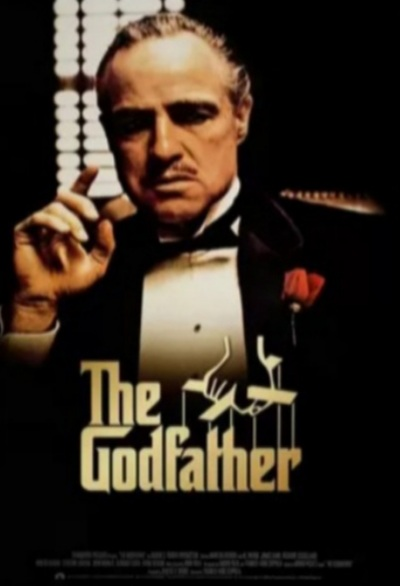

Estrelado por Marlon Brando, Al Pacino, James Caan, Richard Castellano,Robert Duvall, Sterling Hayden, John Marley, Richard Conte e Diane Keaton.
Uma família mafiosa luta para estabelecer sua supremacia nos Estados Unidos depois da Segunda Guerra Mundial.Uma tentativa de assassinato deixa o chefão Vito Corleone incapacitado e força os filhos Michael e Sonny a assumir os negócios.

O PODEROSO CHEFÃO - 1974
Estrelado por Al Pacino, Robert Duvall, Diane Keaton, Robert De Niro, John Cazale, Talia Shire, Lee Strasberg é Michael V. Gazzo.
Após a máfia matar sua família, o jovem Vito foge da sua cidade na Sicília e vai para a América. Vito luta para manter sua família. Ele mata Black Hand Fanucci, que exigia dos comerciantes uma parte dos seus ganhos. Com a morte de Fanucci, o poderio de Vito cresce, mas sua família é o que mais importa para ele. Agora baseado no Lago Tahoe, Michael planeja fazer incursões em Las Vegas e Havana instalando negócios ligados ao lazer, mas descobre que aliados como Hyman Roth estão tentando matá-lo.
O PODEROSO CHEFÃO - 1990
Estrelado por Al Pacino, Diane Keaton, Talia Shire, Andy Garcia, Sofia Coppola, Eli Wallach, George Hamilton e Joe Mantegna.
Don Michel Corleone está envelhecendo e, com a ajuda do sobrinho Vicente Mancini, busca a legitimação dos interesses da família, em Nova York e na Itália, antes de sua morte. Mas seu protegido não está só interessado em parte do império da família. Ele também deseja a filha de Michael, Mary.